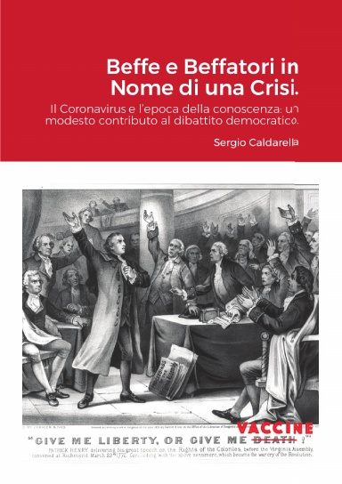
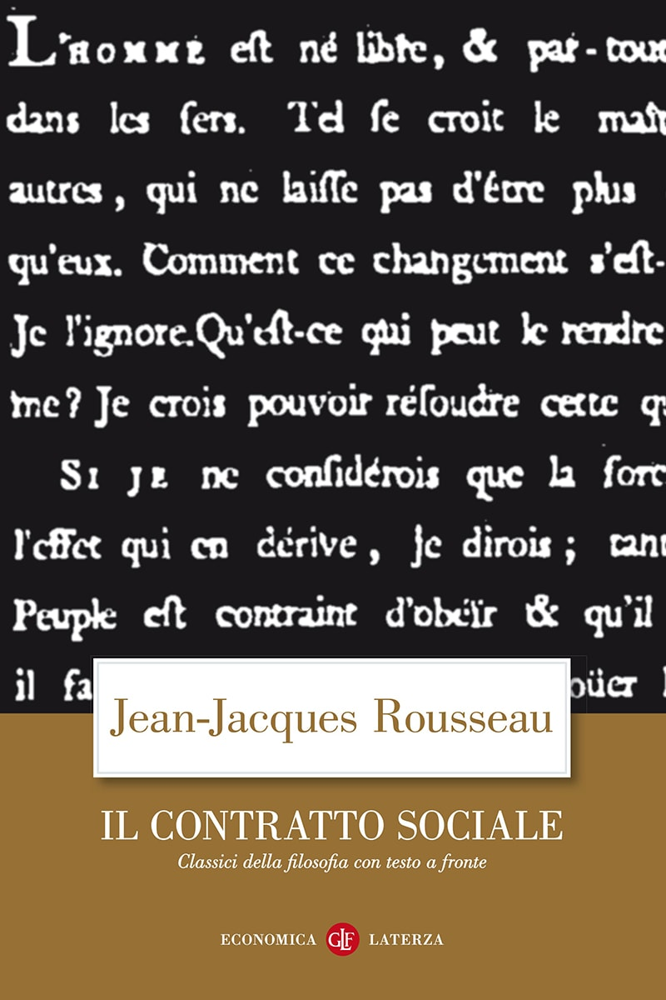

10:06 · 2 OPERE
Lettura del capitolo I di “Beffe e beffatori in nome di una crisi”.
Il filo del discorso
La lettura del primo capitolo di Beffe e beffatori in nome di una crisi espone la critica di Dr Divago al rapporto fra autorità, comunicazione pubblica e libertà individuale. Il testo si apre sulle rappresentazioni attraverso cui il potere cerca obbedienza, quindi distingue l’esercizio dell’autorità dalla responsabilità per le sue decisioni. Nel contesto delle misure legate al coronavirus, l’autore sostiene che paura e retorica abbiano impoverito il confronto democratico. Il ragionamento si allarga alla società amministrata, al profitto come criterio di comportamento e alla riduzione dell’autonomia personale. Una citazione del Contratto sociale introduce il confronto fra libertà dichiarata e vincoli sociali. Il capitolo termina con una domanda sulla possibilità di costruire una comunità senza sacrificare l’individuo. La scheda descrive le posizioni del testo letto; non convalida le sue valutazioni sanitarie, giuridiche o storiche.
I libri nel discorso

Beffe e beffatori in nome di una crisi
Note sul riferimento
Copertina: Lulu, 2021
L’annuncio della lettura è seguito a 00:07–00:15 da un titolo deformato dai sottotitoli, riconoscibile nel suo riferimento a beffatori e crisi.

Il contratto sociale
Note sul riferimento
Copertina: Laterza · Economica · ristampa 2023 · edizione di riferimento
Nel testo letto il riferimento al preambolo del Contratto sociale è seguito a 08:22 dall’incipit sulla libertà dell’essere umano e sulle catene.